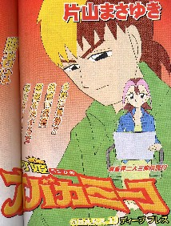
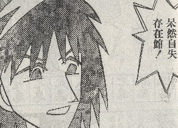

（162）オバカ ミーコ
近マに連載されているいオバカミーコ。いま（近マ5/15日号〜）存在館という若手俳優が女子プロ撲滅運動なるものを展開している最中。なんでも存在館が２回ほど出場したタイトル戦で、２回とも優勝がねらえる位置にいた。それが決勝戦のオーラスで同卓した女子プロに無意味な放銃や無意味なアガリをされ、優勝がふっとんだ。それで頭に来て（？）、撲滅運動を始めたという設定。別にマンガの話にマジレスするわけではないけれど、このマンガを見ていて、むかしのエピソードを思い出した。で、その頭に来たというタイトル戦の模様がこんな感じ。１回目は我鷹（がたか）と五条（ごじょう）にれいら（苗字が分からん...）という名の女子プロ。オーラス、親の存在館は2,700プラスの３着目。誰が南家か分かりにくいのだが、話の流れからゆくと南家はトップ目の我鷹。現在プラス13,000なので、どんな手でもアガリトップ＝優勝。西家のれいらは23,700マイナスでチンマイ状態。優勝するとしたら、役満をツモアガリするか、役満で我鷹を直撃するしかない。北家の五条はプラス8,000なので、5,200のアガリで逆転優勝。そのオーラス、まずれいらがこんな手に。ドラ
か
を切ればチートイでテンパイするが、テンパイ取らずで安全そうな
を切った。もちろんチートイなんか張っても仕方がない。たぶん形の上でそうなっただけと思われ。
そんところへ存在館がを切ってタンピンの手を
マチでリーチ。
ツモアガれば、とりあえず額面で2600オールの暫定トップ。ウラが乗れば満貫もある。＊リーチを掛けたシーンは無いが、「2600オールをツモればトップ目に立ちます！」という司会者のナレーションがあるので、たぶんリーチした。
ここへ２着目の五条が嵌の一通手から
引きの
切り。


のノベタンにマチ替えしてリーチ（ロンアガリ5,200のまくり手）。
続いてトップ目の我鷹が(２)を切って、ドラ（）１枚入りのピンフ手を
マチでダマテン。
ここへれいら選手が引いたのが、テンパイ復帰となる
前巡
で モニターでプレーヤーの手の内が丸見えの司会者が、「前巡、
しかしモニターを見ることができない れいら選手は、 ではなく前巡に通したんなこと云ったって、いま引いたのがたまたま
それに いくら同巡に
いずれにしても、この優勝が消えた存在館が呆然自失するのは分かるけど、呆然自失は五条も同じと思うけど....。＃もちろん無意味な放銃をされたからではなく、自分（五条）がこのゲームで敗れたことに対して。
で このマンガを見ていて、むかしのエピソードを思い出した。
若いとき参加していた麻雀サークルで、先輩格が「タイトル戦などで用ナシ状態になったら、おとなしくしているのがマナー」と教えていた。とうぜん大きくマイナスしたような場合、絶対にトップ争いに迷惑をかけてはいけない。そんな場合は実質 アガリ放棄、最初からベタ降り状態で打つ。まさにこのマンガで、司会者が「意味のないテンパイどり！」と叫ぶような打ち方は嚴に戒められていた。
もちろんそんな状態から誰かに放銃して、ゲームを終わらせるなんてのはもっての他。アガらないように 打ち込まないように、ひたすら頭を低くして打つ。まさにうちひしがれた負け犬状態(ノд｀)
そいでも役満でひっくりかえる点差なら、強引に役満を狙っていくのはいいかといえば、そうではない。配牌お化けならともかく、ごく普通の手から強引に役満狙いにゆけば、打牌はムチャ振りになる。とうぜん誰かに放銃する危険も高くなる。そこで、そんな強引な打ち方は絶対に不可。
（競技麻雀とは、そういうものか）と思っていたので 云われたように打っていた。そんな頃、σ(-_-)の考えを大きく転換させるような出来事が。
ある新聞での紙上対局。σ(-_-)は予選で敗退して、決勝戦ではコイズミさん（仮名）の採譜係。そのコイズミさん、オーラスを迎えたとき、れいらと同じチンマイ状態。役満でも和了しない限り、優勝の目はない。
コイズミさんの配牌は、幺九牌がパラパラと６枚あるようなどうでもいい手。そこで中張牌をどんどん切り出して、配牌からベタ降り。別に国士を狙ったわけではない。それはいままでのコイズミ選手からの言動からも推察できる。ところが幺九牌がどんどん来て、中盤過ぎには国士無双のイーシャンテン！。か
（おや、まぁ...）と思っているたら、ちと危険牌の切りとした。ところが次に引いたのが
もちろんそのまま
そこで終了後、観戦記事役のHさんにその疑問を話した。すると「あんたは麻雀が全然分かとらん」....
数日後の観戦記には、優勝者をたたえる記事に続いて、コイズミさんのみごとな打ち回しにも言及があった。いわく「またオーラス、コイズミ選手の自分を犠牲にした打ち回しは素晴らしかった。突っ張っていれば国士をアガったような形になったが、それは愛嬌みたいなもの」という主旨。しかしσ(-_-)はこの記事を読んだとき、大いに違和感があった。それからσ(-_-)の考えが大いに変わった。タイトル戦である以上、優勝しなけりゃ意味がない。望みゼロならともかく、わずかでもチャンスがあるなら、役満をねらってブンブン行くべきじゃないか。仮に途中で放銃したって、それてこそ結果論。放銃のせいで優勝者が変わったって、知ったことか。れいらには会ったことがないので分からないけど、ひょっとするとコイズミさんと同じような感覚で打っていたのかもしれない。もちろん誰がどう打とうと勝手なので、それは問題ではない。しかしいまのσ(-_-)が れいらの立場だったら、誰に何を云われようと四暗刻めざしてブンブン行っている。とうぜん最初のチートイをテンパった時点で、
司会者、何抜かしてけつかんねん！★Ｏ＝(`_` )メガパンチ！
＃それにしても馬杉寧香って、恰好良杉じゃ寧香！。前から好きキャラだったけど、ますます好きになった（^-^；